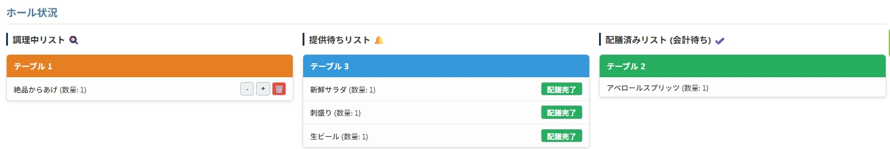
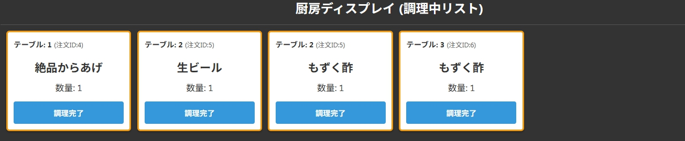
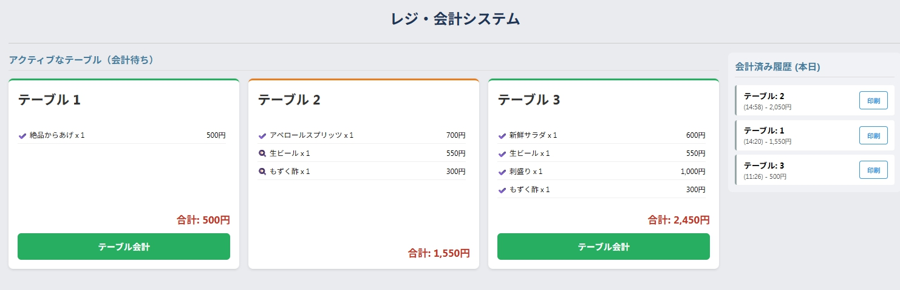

『Rise』へようこそ！このマニュアルは、日々の営業で『Rise』を使うための、かんたんな操作説明書です。難しいことは何もありません。いつもの仕事が、少しだけ楽になる。そんな風に感じていただけたら嬉しいです。
1. ログイン
お店のタブレットやPCで、指定されたURLを開き、店長から伝えられたスタッフ共用のIDとパスワードでログインします。その後、あなたの役割に合った画面を選択してください。


2. 【ホール担当の方へ】フロアの司令塔になろう！
お客様のご案内から注文の管理まで、ホールのお仕事がぐっとスムーズになります。
お客様がご来店されたら
「**テーブル管理**」セクションで、ご案内するテーブル番号を入力し、**「テーブルを追加」**ボタンを押します。新しくできたカードの**「QR表示」**ボタンを押し、お客様にQRコードを提示します。
お客様からの「呼び出し」に対応する
お客様が呼び出しボタンを押すと、「**呼び出し中 📞**」セクションに赤いカードが表示されます。ご用件を伺ったら**「対応済み」**ボタンを押しましょう。
注文状況を確認する
「**ホール状況**」を見れば、全テーブルの状況が一目でわかります。特に「**提供待ちリスト 🔔**」に表示されたお料理は、調理が完了した合図です。速やかにお客様の元へ運びましょう！
3. 【厨房担当の方へ】最高の料理に集中しよう！
お客様が注文を確定すると、厨房画面に自動的に**「調理カード」**が追加されます。調理が完了したら、そのカードの**「調理完了」**ボタンを押してください。ホール担当がお客様へ運んでくれます。
4. 【レジ担当の方へ】お会計をスマートに！
レジ画面には、ご利用中のテーブルとお会計金額が自動で表示されます。お客様のテーブル番号を確認し、該当するカードの**「テーブル会計」**ボタンを押せば会計処理は完了です。
領収書が必要な場合は、「会計済み履歴」の**「印刷」**ボタンから発行できます。

5. 【お客様のスマホ画面】
参考までに、お客様が見ているスマートフォン画面はこのようになっています。
オープニング画面
QRコードを読み取ると、まずお店のウェルカムメッセージが表示されます。
メニュー画面
美味しそうな写真と共に、メニューが一覧で表示されます。ここから商品を選んでカートに追加します。
注文確認画面
注文したい商品を選び終わったら、この画面で内容を最終確認し、注文を確定します。

『Rise』は、あなたのお仕事をサポートするための道具です。もし、ご高齢のお客様など、スマートフォン操作が苦手な方がいらっしゃいましたら、これまで通り、優しく口頭でご注文をお受けしてください。その際は、ホール画面の「代行注文」機能が便利です。